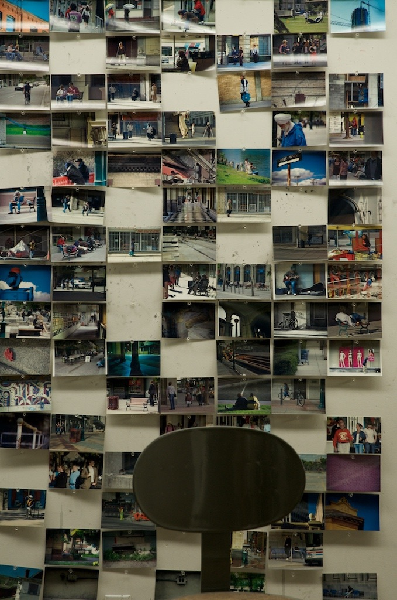
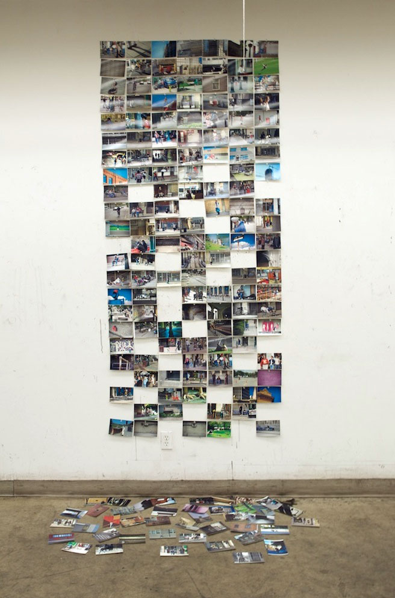
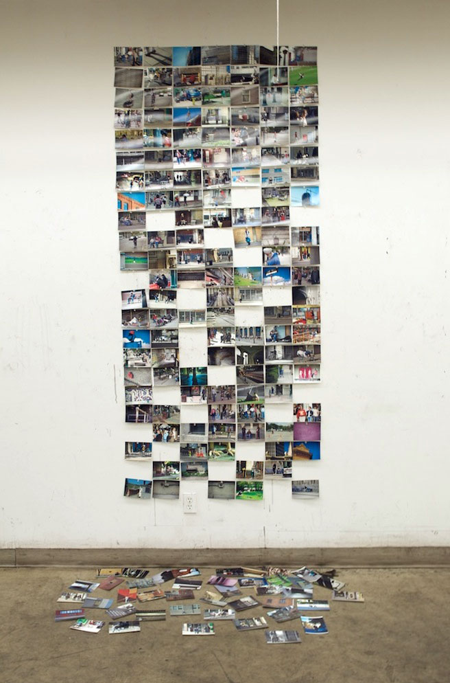

Archives Project comes from the realization that digital images don't exist unless they are seen. Similar to the idea of schrodinger's shoebox, where you never know if there are shoes or photographs inside until you open it, you will never know what is on a hard drive unless you look through it.
Variations of the Archives Project phtographs.
The archives project began as an interpretation of the volume of photographs one can take, and how thosse photographs may affect a memory or feeling about the period or location they were taken. The initial concept for the installation was a smaller, more intimate interpretation, based upon the culling of visual information through inspection.
Ongoing explorations of this body of work included further editing of those images for specific purpooses, including the removal of 'undesirables' from depictions of 'progress' during 2008 in Calgary. Images of older buildings, homeless and disenfranchised people discarded beneath a wall of images representing growth and promotion.
Further explorations included an innundation of visual imagery with over 1600 images covering an entire wall, intended to force a reckoning with the past through visual representations of what wass seen.
The storage medium is the message.
Over time the images in the Archive Project became less relevant when compared to what those images meant. The family album of people you don't know or the shoebox of photographs from your parents parents. The shoebox and album themselves become the focus of a heritage, and not necessarily the images that are within. In my case the hard drive becomes the main consideration, a heritage of moments that exist only because a camera blocked my view.
This body of work is based on personal observations of a growing detachment from photography because of a reliance on digital storage, resulting in an ambivalence for the individual images I have generated ove rhte years.
 
